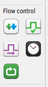
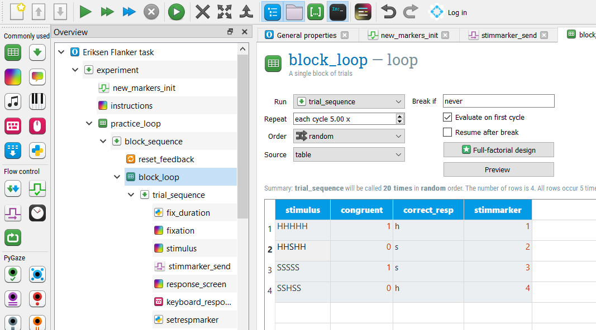
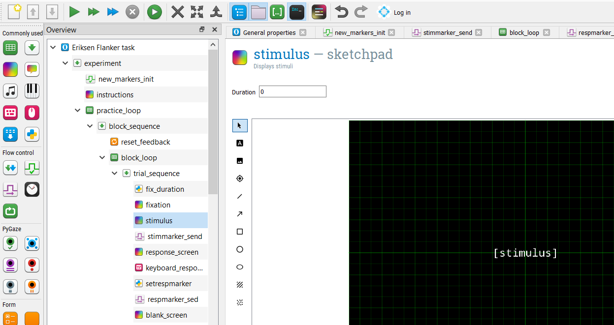
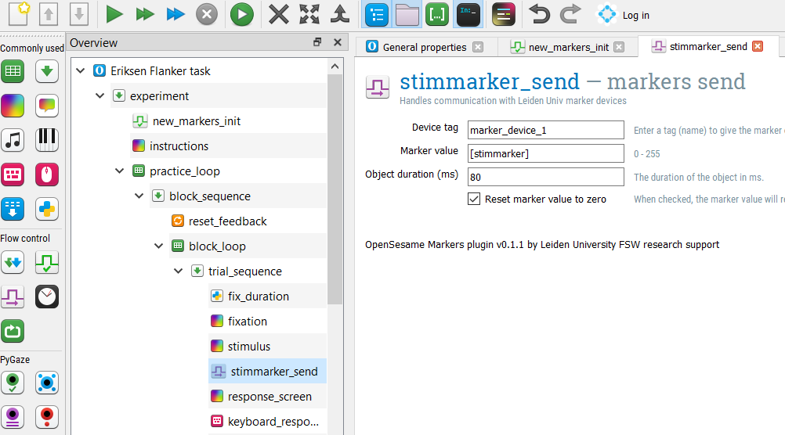

Using the parallel port in OpenSesame
Contents
Using the parallel port in OpenSesame¶
TODO tutorial plug-in provided by Iris Spruit SOLO? / Selin Topel
based on the flanker task created in excercise 1 of the Eriksen flanker tutorial in chapter 3.
Adding markers to an experiment¶
Step 1. Installing the OpenSesame plug-in for sending markers with Leiden University devices¶
To install the plug-in, open OpenSesame and use the following lines of code in the Python console (make sure that the console is visible by clicking on the “Show Jupyter/IPython console” icon):
!pip install --user git+https://github.com/solo-fsw/opensesame_plugin_markers
After running this line of code, restart the OpenSesame and open the Eriksen Flanker task you programmed in Tutorial 2 of chapter 3. Alternatively, you can download the solution for the Eriksen Flanker task and open it in OpenSesame: https://minhaskamal.github.io/DownGit/#/home?url=https://github.com/JeshuaT/Experimentation1/blob/main/content/solutions/flankertask_1_exercise1.osexp
Under “flow control”, you should now also see two new objects called markers_init and markers_send.

Step 2. Presenting stimulus markers¶
Recall that there are four types of stimulus in this task as a result of the combination of Congruency (congruent, incongruent) and Letter (H, S): HHHHH, SSSSS, SSHSS, HHSHH. Thus, we would like to present a unique marker for each of these stimuli.
To do this, we first insert a markers_init object at the start of the main sequence of the experiment. We keep the default settings as shown in the figure below.
Then we add a varible (column) called stimmarker in the block_loop and block_loop_1; and give unique values corresponding to each stimulus (e.g., 1, 2, 3, 4).

Stimulus markers will be sent when the stimuli are presented, thus we also need to insert a markers_send element right after the stimulus presentation in the trial sequence (both in the practice and experimental loops). Given that the marker values are determined by the stimmarker variable we created, we refer to this variable in the object as the marker value.

Step 3. Presenting response markers¶
We might be also interested in running analyses related to types of responses participants made (i.e., incorrect vs. correct). Thus, we would need to send unique markers for correct and incorrect responses.
To do this, we first insert an in-line object, setrespmarker, under keyboard_response and write a conditional as follows in the Run tab:
if var.correct == 1:
var.respmarkervalue = 5 # correct
else:
var.respmarkervalue = 6 # incorrect
This in-line should be then followed by another markers_send item we called Respmarker_send where the marker value is set to the value of the respmarkervalue variable.

Step 4. Presenting feedback markers¶
Additionally, we can also send markers defining the feedback participants received after their response. These could correspond to “correct”, “incorrect”, and “missing” trials. By now, you might have an idea on how we would implement this. Similar to our approach above for the response markers, we can write a conditional statement in an inline following feedback presentation. However, it is important to note that participants may have missed some trials which also means that they did not respond correctly in these trials.
if var.response == "None":
var.fbmarkervalue = 7 # missing
elif var.correct == 1:
var.fbmarkervalue = 8 # correct
else:
var.fbmarkervalue = 9 # incorrect
Exercises¶
Exercise 1. Add block markers¶
It is often convenient to have markers that indicate the start and the end of each block of trials, for example if you want to exclude EEG or other physiological data collected during the breaks when analyzing your data. Add the markers 101 and 102 to indicate the start and the end of the practice block, respectively. Add the markers 111 and 112 for test block 1, 121 and 122 for test block 2, etc.
Now let’s think a moment about the length of the markers. How long do you present the markers before the signals goes back to 0? And how long does the signal stays 0 before you send a new marker? Make sure there is sufficient time between the onset of the start-block marker and the first stimulus marker of a block. Also make sure there is sufficient time after the end of the last trial and the onset of the end-block marker. What is the minimum duration of the marker and the period it is 0 when the device that records your parallel port signal samples at 500 Hz (i.e. 500 read-outs per second)? And what is the minimum duration when the sample frequency is 50 Hz?
Exercise 2. Recreate the incredible scanner beam emitted by KITT¶
Note: Part of the text below is adapted from The E-Primer (Spapé, Verdonschot, & van Steenbergen, 2019). Spapé M.M., Verdonschot, R.G., & van Steenbergen, H. (2019) The E-Primer: An introduction to creating psychological experiments in E-Prime. Second edition updated for E-Prime 3. Leiden: Leiden University Press. www.e-primer.com Copyright 2019 by the authors and LUP. Adapted with permission.
For our final exercise you will recreate the incredible scanner beam emitted by KITT from the Knight Rider television series (yes folks, dating back to the 1980s!).
from IPython.display import IFrame
IFrame(src="https://www.youtube.com/embed/oNyXYPhnUIs", width="560", height="315")
We will use the 8 LEDs displayed on the parallel port test device kindly provided by our lab support department. In our case the scanner beam is actually a light which starts at the left and, when it reaches the right, goes back towards the left. The easiest example to implement is the one with one light only, but if you really want to test your skills you could instead start with two lights which then move two steps to the right, ending with two lights on the right before moving back. Both examples are illustrated in the figure below.
Make sure the whole scanner beam repeats at least five times from left to right to allow KITT enough time to scan the surrounding area for enemies.
Hint To create the light pattern use a loop that presents the values 10000000, 01000000, 00100000, etc. (entered in separate rows) sequentially. Use the conversion script you created during the exercises to convert this binary notation to a decimal notation. This decimal number should be sent to the parallel port as a marker.